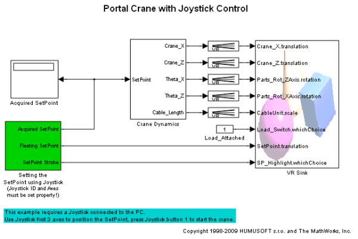
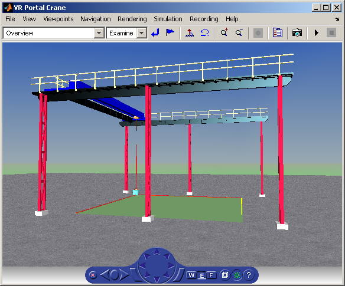

Portal Crane with Joystick Control
The vrcrane_joystick example illustrates how a Simulink® model can interact with a virtual world. The portal crane dynamics is modeled in Simulink and visualized in virtual reality. The model uses Joystick Input block to control the setpoint. Joystick 3 axes are used to control the setpoint position, button 1 is used to start the crane.
In order to minimize the number of signals transferred between the Simulink model and the virtual reality world and to keep the model as simple and flexible as possible, only the minimum set of moving objects properties are sent from the model to the VR Sink block. All other values necessary for describing the virtual reality objects movement are computed from this minimum set using VRMLScript written in the associated VRML file.
For details on how the crane model hierarchy and scripting logic is implemented please view the associated commented VRML file portal_crane.wrl in a text editor.
This example requires a standard Joystick with at least 3 independent axes connected to the PC.
Acknowledgements:
The Portal crane VRML model is based on the work done by Mr. Martin Foltin and Mr. Samuel Bartos, Department of Automatic Control Systems, Slovak Technical University, Bratislava, Slovak Republic.
 